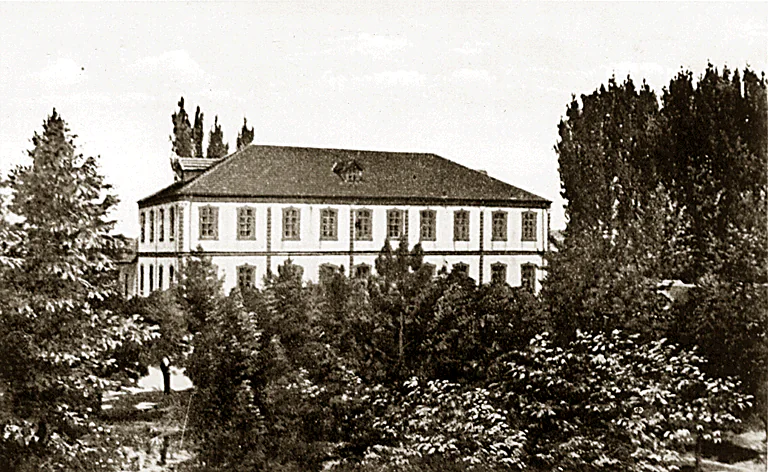
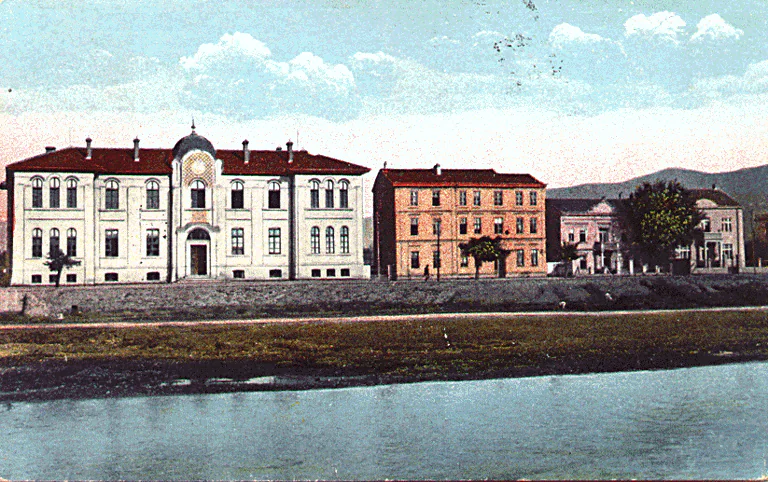

Faculty of Philosophy
- Produced by
- Kole Čašule, Blagoja Drnkov
- Year
- 1947
- Length
- 00:04

The Idadija secondary school, built towards the end of the 19th century. Its course lasted eight years and was open to pupils of all faiths. The building later became the Teachers' School, until the 1963 earthquake badly damaged it. It was therefore demolished in 1965, leaving the entrance with its four columns as a memorial. The people of Skopje still call this area Idadija. In the background is the School of Arts and Crafts.

The Teachers' School (the 1920s)

Part of the city park with the building of the crafts school. (the 1920s)

The building of the Idadija secondary school, after the Second World War the "Teachers' School", destroyed in the catastrophic earthquake of 26 July 1963.

The School of Arts and Crafts, built towards the end of the 19th century, right next to the teachers' school. It was badly damaged in the 1963 earthquake and therefore demolished.

Skopje University in 1920 on the Vardar quay. It housed the Faculty of Philosophy, as part of the University of Belgrade.

Skopje University in 1920 on the Vardar quay. It housed the Faculty of Philosophy, as part of the University of Belgrade.

The courtyard building of the boys' gymnasium. (1912)

The Skopje boys' gymnasium, built in 1902-04, with neoclassical features. In the foreground is "Poincaré" Street, later "Leningradska".

The boys' gymnasium, built in 1902.

The great madrasa on Ilindenska Street (the 1920s)

The "Holy Mother of God" primary school - the 1920s.

"Jovan Skerlić" primary school - the 1920s.

Third national primary school (the 1920s)

The Serbian-Jewish primary school in the Jewish quarter.
(end of the 19th century)

The "Đura Jakšić" primary school (the 1920s)

"Queen Maria" national primary school - the 1920s.

The "Tsar Dušan" primary school, next to the Macura building on the city square - the 1920s.
The "Tsar Dušan" primary school, next to the Macura building on the city square - the 1920s.

The "Branko Radičević" primary school - the 1920s.

"Ljuba Kovačević" national school - the 1920s.

"Vladimir Karić" national school - the 1920s.

"Dositej Obradović" national school, in the Sauk Česma quarter - Čair - the 1920s.

"Vuk Stefan Karadžić" primary school - the 1920s.

"Mehmed Sokolović" national school - the 1920s.

"Osman Džikić" national school - the 1920s.

The Commercial Academy - the 1920s.

The Commercial Academy - the 1920s.

The courtyard of the boys' gymnasium - the 1920s.

The new building of the "Dositej Obradović" primary school, built in the 1930s.

The "Goce Delčev" primary school. (photographed in 1934)

The "Goce Delčev" primary school. (photographed around 1950)

The girls' gymnasium - at night. In the foreground is the monument to the liberators of Skopje. (around the 1950s)

The girls' gymnasium, built in the 1930s; the photograph is from the 1950s. In front of the building is the monument "The Liberators of Skopje"

Faculty of Natural Sciences - the 1950s

The "11 October" primary school - the 1960s

Faculty of Technology - the 1960s

Film Review no. 10
 Aqueduct4 postcards
Aqueduct4 postcards Kale30 postcards
Kale30 postcards Bridges60 postcards
Bridges60 postcards Quay58 postcards
Quay58 postcards Square46 postcards
Square46 postcards Buildings66 postcards
Buildings66 postcards Christian churches19 postcards
Christian churches19 postcards Muslim buildings33 postcards
Muslim buildings33 postcards Officers' Club29 postcards
Officers' Club29 postcards Theatre28 postcards
Theatre28 postcards Railway station13 postcards
Railway station13 postcards Schools36 postcards
Schools36 postcards Parks12 postcards
Parks12 postcards Markets18 postcards
Markets18 postcards Streets38 postcards
Streets38 postcards Panorama I60 postcards
Panorama I60 postcards Panorama II30 postcards
Panorama II30 postcards Collages55 postcards
Collages55 postcards Floods9 postcards
Floods9 postcards Earthquake27 postcards
Earthquake27 postcards Skopje 200026 postcards
Skopje 200026 postcards